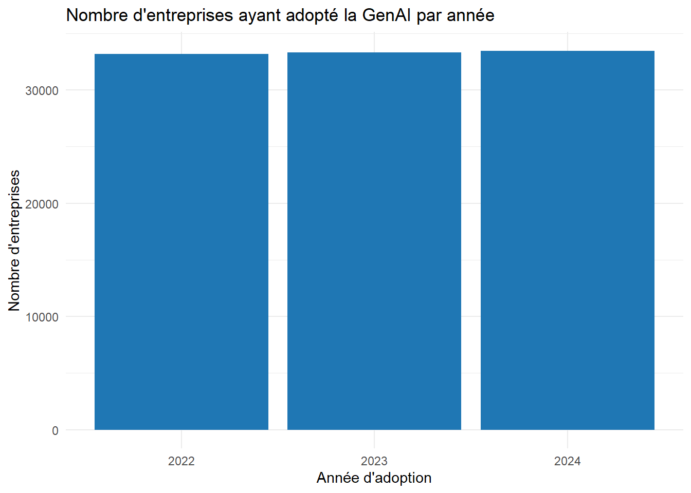
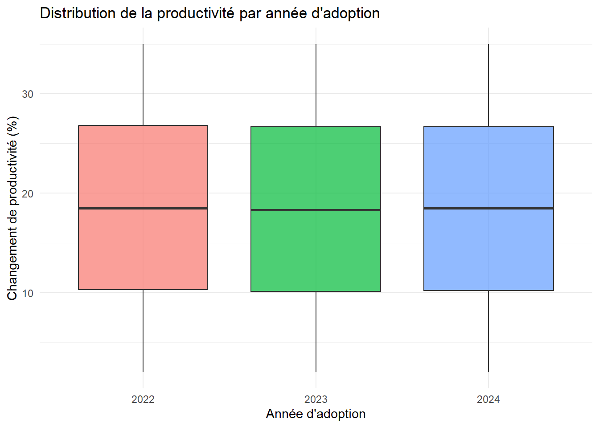
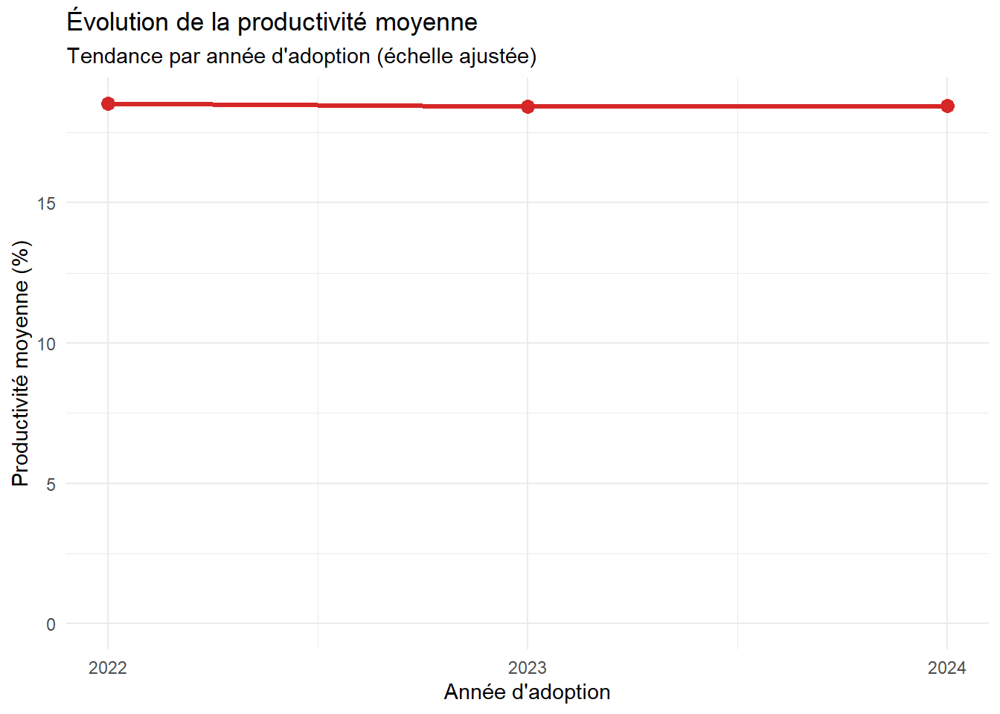
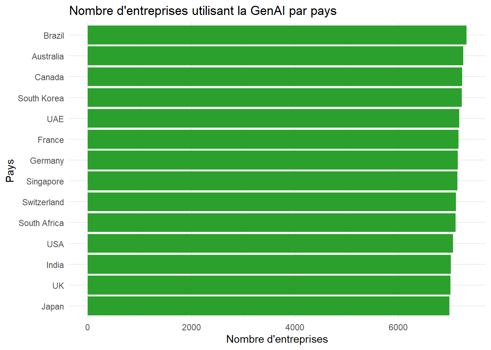
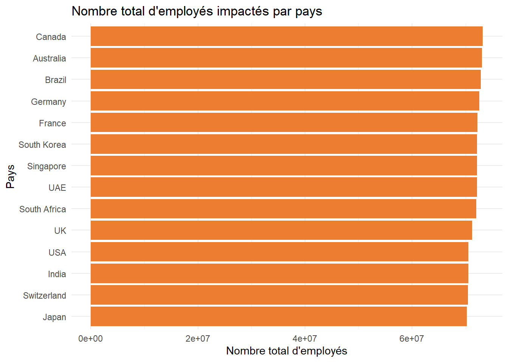
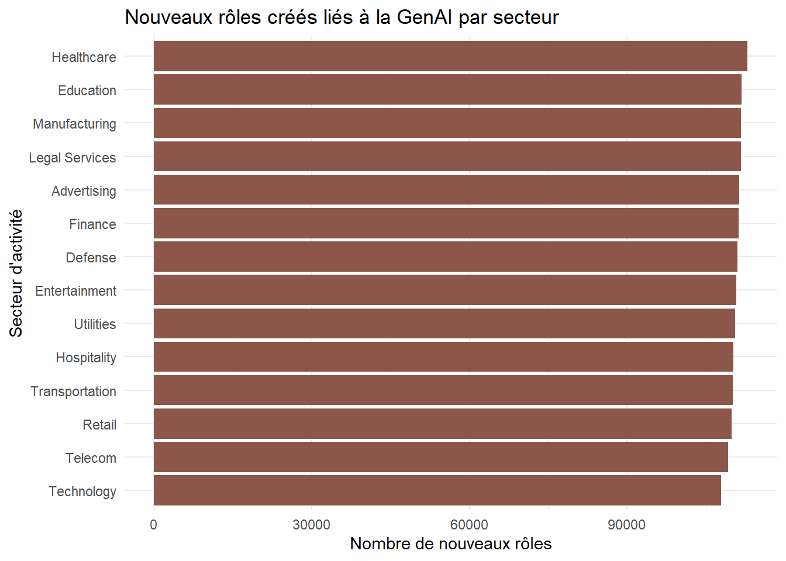
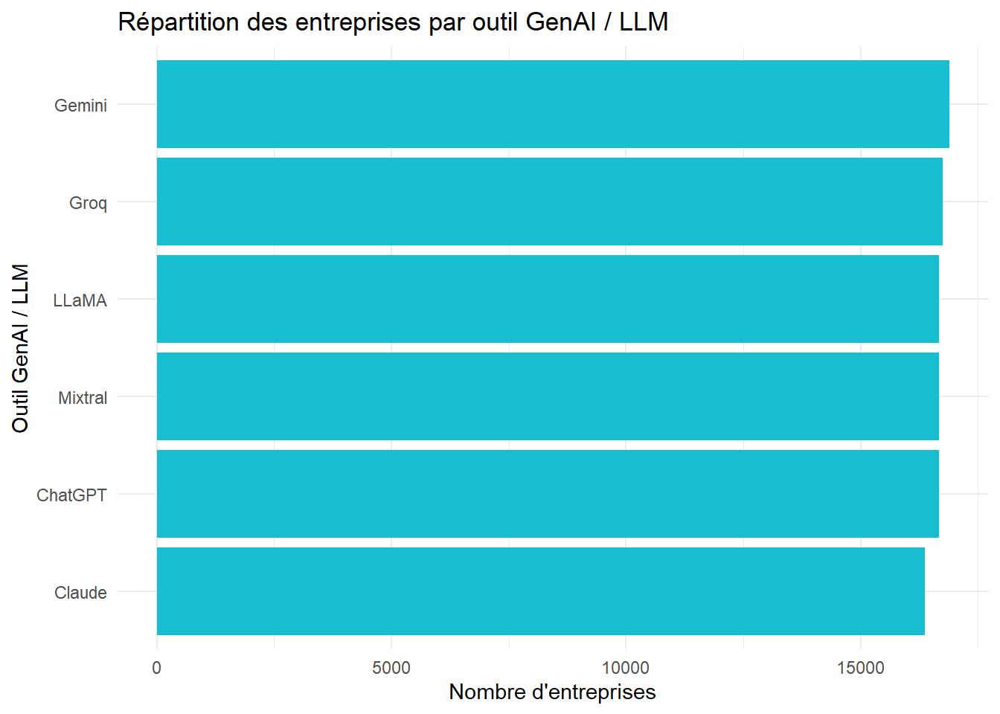
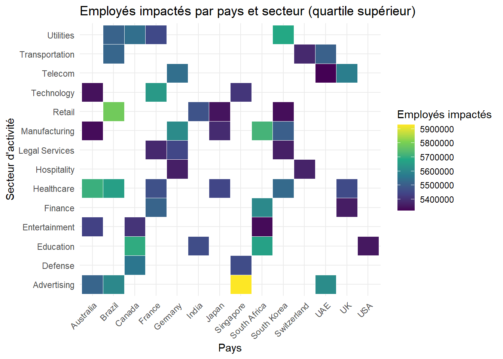
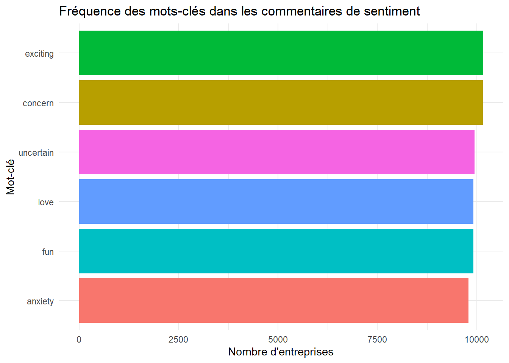

La diffusion récente des modèles de langage (LLMs) et des outils de génération de contenu (GenAI) transforme rapidement les organisations : nouveaux cas d’usage, réallocation des tâches, création de rôles spécialisés, mais aussi inquiétudes sur l’avenir de certains métiers.
Dans ce document, nous proposons une analyse descriptive de cette adoption en entreprise, en mettant l’accent sur :
l’émergence temporelle de la GenAI (années d’adoption),
les différences entre pays et entre secteurs d’activité,
l’ampleur de l’impact sur la main-d’œuvre (employés impactés, nouveaux rôles, formation),
et la perception des salariés à travers des commentaires textuels.
2 Contexte et source des données
Cette analyse s’appuie sur le jeu de données “Enterprise GenAI Adoption & Workforce Impact” publié sur Kaggle.
Number of Employees Impacted : nombre d’employés dont le travail est affecté par la GenAI
New Roles Created : nombre de nouveaux rôles créés liés à la GenAI
Training Hours Provided : volume d’heures de formation dispensées
Productivity Change (%) : variation estimée de la productivité (en pourcentage)
Employee Sentiment : commentaire qualitatif sur la perception des employés
Le jeu de données comprend 100 000 entreprises au total, ce qui permet d’obtenir des agrégations stables par année, pays et secteur dans ce cadre simulé.
L’objectif de cette analyse est de décrire l’émergence et l’utilisation des outils GenAI / LLMs en entreprise selon :
le temps (année d’adoption),
le pays,
le secteur d’activité,
et l’ampleur de l’impact sur les métiers (employés impactés, nouveaux rôles, sentiment).
Show code
# Chargement des packages (sans utiliser le méta-package tidyverse)library(dplyr)library(ggplot2)library(readr)library(stringr)library(forcats)# Helper : (re)charger les données et préparer genai_cleanensure_genai_clean<-function(){# Si les données nettoyées existent déjà dans l'environnement courant, ne rien refaireif(exists("genai_clean")){return(invisible(genai_clean))}# Détecter si l'on est dans l'environnement webR (prévisualisation Quarto)is_webr_env<-grepl("/home/web_user", getwd())if(is_webr_env){# En webR, on lit le fichier via une URL HTTP hébergée sur le site GitHub Pagesdata_url<-"https://raw.githubusercontent.com/MoniaSellaoui/Adoption-des-outils-GenAI-LLMs-en-entreprise/master/qmd/data/enterprise_genai_data.csv"local_path<-"enterprise_genai_data.csv"if(!file.exists(local_path)){ok<-FALSEtry({download.file(data_url, destfile =local_path, quiet =TRUE)ok<-file.exists(local_path)}, silent =TRUE)if(!ok){stop(paste0("Impossible de télécharger 'enterprise_genai_data.csv' depuis ", data_url, ". ","Assure-toi que le site est publié et que le fichier est bien accessible à cette URL."))}}data_path<-local_path}else{# En rendu local (R standard), on lit directement le fichier dans le dépôtcandidates<-c("qmd/data/enterprise_genai_data.csv", # rendu depuis la racine du projet"data/enterprise_genai_data.csv", # rendu depuis le dossier qmd/"enterprise_genai_data.csv", # rendu depuis le dossier data/"../qmd/data/enterprise_genai_data.csv"# rendu depuis un sous-dossier éventuel)data_path<-NULLfor(pincandidates){if(file.exists(p)){data_path<-pbreak}}if(is.null(data_path)){stop(paste0("Le fichier 'enterprise_genai_data.csv' est introuvable dans les emplacements attendus. ","Répertoires testés (relatifs à getwd()='", getwd(), "') : ",paste(candidates, collapse =", "), "."))}}# Chargement brutgenai<<-readr::read_csv(data_path, show_col_types =FALSE)# Nettoyage / renommage des colonnesgenai_clean<<-genai%>%dplyr::rename( company =`Company Name`, industry =Industry, country =Country, tool =`GenAI Tool`, adoption_year =`Adoption Year`, employees_imp =`Number of Employees Impacted`, new_roles =`New Roles Created`, training_hours =`Training Hours Provided`, prod_change =`Productivity Change (%)`, sentiment =`Employee Sentiment`)invisible(genai_clean)}# Charger une première fois les données au démarrage du documentensure_genai_clean()
3 1. Description des données
Dans cette première partie, nous explorons la structure du jeu de données et les principales variables afin de vérifier qu’elles sont cohérentes avec notre problématique (pays, secteurs, outils GenAI et indicateurs d’impact sur la main-d’œuvre).
Show code
# Appeler le helper pour s'assurer que genai_clean est prêtensure_genai_clean()summary(genai_clean)
Interprétation (description des données)
Chaque ligne du tableau correspond à une entreprise. On y retrouve son pays, son secteur d’activité, l’outil GenAI principal utilisé, l’année d’adoption et plusieurs indicateurs d’impact : nombre d’employés concernés, nouveaux rôles créés, heures de formation et changement de productivité estimé. La colonne Employee Sentiment fournit un commentaire libre permettant une lecture plus qualitative des effets ressentis par les salariés.
4 2. Émergence temporelle des outils GenAI / LLMs
4.1 2.1 Nombre d’entreprises par année d’adoption
Nous commençons par observer à quel rythme les entreprises adoptent les outils GenAI/LLMs en fonction du temps.
Show code
# S'assurer que genai_clean existeensure_genai_clean()adoption_by_year<-genai_clean%>%count(adoption_year)adoption_by_year
Show code
ggplot(adoption_by_year, aes(x =factor(adoption_year), y =n))+geom_col(fill ="#1f77b4")+labs( title ="Nombre d'entreprises ayant adopté la GenAI par année", x ="Année d'adoption", y ="Nombre d'entreprises")+theme_minimal()

Interprétation
On visualise ici le nombre d’entreprises qui déclarent avoir adopté la GenAI pour chaque année. Dans ce jeu de données, on compte 33 180 entreprises adoptantes en 2022, 33 344 en 2023 et 33 476 en 2024, soit une concentration exclusive sur la période 2022–2024 qui reflète une adoption très récente et continue.
4.2 2.2 Évolution de la productivité moyenne par année
Show code
# S'assurer que genai_clean existeensure_genai_clean()prod_by_year<-genai_clean%>%group_by(adoption_year)%>%summarise( mean_prod_change =mean(prod_change, na.rm =TRUE), n =n())%>%arrange(adoption_year)prod_by_year
Show code
ggplot(genai_clean, aes(x =factor(adoption_year), y =prod_change, fill =factor(adoption_year)))+geom_boxplot(alpha =0.7, show.legend =FALSE)+labs( title ="Distribution de la productivité par année d'adoption", x ="Année d'adoption", y ="Changement de productivité (%)")+theme_minimal()

Show code
ggplot(prod_by_year, aes(x =adoption_year, y =mean_prod_change))+geom_line(color ="#d62728", size =1.2)+geom_point(color ="#d62728", size =3)+scale_x_continuous(breaks =unique(prod_by_year$adoption_year))+expand_limits(y =0)+# Forcer l'axe Y à partir de 0 pour éviter l'effet loupelabs( title ="Évolution de la productivité moyenne", subtitle ="Tendance par année d'adoption (échelle ajustée)", x ="Année d'adoption", y ="Productivité moyenne (%)")+theme_minimal()

Interprétation
Cette section met en perspective la distribution (boxplots) et la moyenne (courbe rouge) des gains de productivité :
Distribution (Boxplots) : On observe une dispersion similaire des gains de productivité pour chaque année d’adoption, indiquant que la variabilité de l’impact reste constante.
Tendance moyenne (Courbe rouge) : La ligne rouge trace l’évolution du gain moyen. On constate une stabilité remarquable autour de 18,5 % (18,5 % pour 2022, 18,4 % pour 2023 et 18,5 % pour 2024).
Cela suggère que l’impact positif de la GenAI sur la productivité est robuste et homogène dans le temps : les “premiers adoptants” ne bénéficient pas d’un avantage disproportionné par rapport aux suivants, et l’efficacité de la technologie ne semble pas s’essouffler sur cette courte période.
5 3. Adoption par pays
Nous examinons maintenant la diffusion de la GenAI selon le pays, en termes de nombre d’entreprises concernées, d’employés impactés et de gains de productivité moyens.
5.1 3.1 Nombre d’entreprises et employés impactés par pays
ggplot(country_summary,aes( x =fct_reorder(country, n_companies), y =n_companies))+geom_col(fill ="#2ca02c")+coord_flip()+labs( title ="Nombre d'entreprises utilisant la GenAI par pays", x ="Pays", y ="Nombre d'entreprises")+theme_minimal()

Show code
ggplot(country_summary,aes( x =fct_reorder(country, total_employees), y =total_employees))+geom_col(fill ="#ed7d31")+coord_flip()+labs( title ="Nombre total d'employés impactés par pays", x ="Pays", y ="Nombre total d'employés")+theme_minimal()

Interprétation
Les pays avec le plus grand nombre d’entreprises dans ce graphique apparaissent comme des pôles d’adoption rapide de la GenAI. Dans ce jeu de données, le podium par nombre d’entreprises comprend le Brésil (~7 322 entreprises), l’Australie (~7 255) et le Canada (~7 238), suivis de près par la Corée du Sud et les Émirats Arabes Unis. Ils combinent souvent un écosystème technologique développé et une pression concurrentielle forte pour automatiser et augmenter les tâches.
5.2 3.2 Productivité moyenne par pays
Show code
#| results: hideggplot(genai_clean, aes(x =fct_reorder(country, prod_change), y =prod_change, fill =country))+geom_boxplot(alpha =0.7, show.legend =FALSE)+coord_flip()+labs( title ="Distribution de la productivité par pays", x ="Pays", y ="Changement de productivité (%)")+theme_minimal()
Interprétation
Ce graphique compare le gain de productivité moyen entre pays. Des valeurs élevées indiquent des contextes où l’intégration de la GenAI s’accompagne d’une amélioration marquée des performances, même si cela ne dit rien sur les inégalités potentielles entre entreprises ou secteurs au sein d’un même pays.
6 4. Adoption par secteur d’activité (industries)
Les secteurs d’activité jouent un rôle clé dans la façon dont la GenAI transforme les métiers : certains sont très exposés (technologie, finance, services juridiques), d’autres l’utilisent de manière plus ciblée.
6.1 4.1 Nombre d’entreprises et employés impactés par secteur
ggplot(industry_summary,aes( x =fct_reorder(industry, total_employees), y =total_employees))+geom_col(fill ="#ff7f0e")+coord_flip()+labs( title ="Nombre d'employés impactés par secteur", x ="Secteur d'activité", y ="Nombre d'employés impactés")+theme_minimal()
Show code
ggplot(industry_summary,aes( x =fct_reorder(industry, n_companies), y =n_companies))+geom_col(fill ="#4472c4")+coord_flip()+labs( title ="Nombre d'entreprises utilisant la GenAI par secteur", x ="Secteur d'activité", y ="Nombre d'entreprises")+theme_minimal()
Show code
ggplot(industry_summary,aes( x =fct_reorder(industry, mean_prod_change), y =mean_prod_change))+geom_col(fill ="#70ad47")+coord_flip()+labs( title ="Changement de productivité moyen par secteur", x ="Secteur d'activité", y ="Productivité moyenne (%)")+theme_minimal()
Interprétation
Les secteurs qui concentrent le plus grand nombre d’employés impactés sont ceux où la GenAI modifie le plus massivement les tâches quotidiennes (par exemple génération de contenu, analyse de documents, support client, etc.). Dans ce dataset simulé, les secteurs Advertising, Defense, Education, Entertainment et Finance se situent en tête en termes d’employés impactés cumulés, ce qui en fait des “métiers” particulièrement exposés à court terme.
6.2 4.2 Nouveaux rôles créés par secteur
Show code
ggplot(industry_summary,aes( x =fct_reorder(industry, total_new_roles), y =total_new_roles))+geom_col(fill ="#8c564b")+coord_flip()+labs( title ="Nouveaux rôles créés liés à la GenAI par secteur", x ="Secteur d'activité", y ="Nombre de nouveaux rôles")+theme_minimal()

Interprétation
Ici, nous mettons en évidence les secteurs où la GenAI ne se traduit pas seulement par l’automatisation, mais aussi par la création de nouveaux rôles spécialisés (prompt engineer, data/AI specialist, référent GenAI, etc.). Un volume important de nouveaux rôles signale une reconfiguration profonde des compétences attendues.
7 5. Adoption par outil GenAI / LLM
Toutes les entreprises ne choisissent pas le même outil. Cette section compare les principaux LLMs et plateformes GenAI utilisés (ChatGPT, Gemini, Claude, LLaMA, Mixtral, Groq, etc.) en termes de diffusion et de gains de productivité.
ggplot(tool_summary,aes( x =fct_reorder(tool, n_companies), y =n_companies))+geom_col(fill ="#17becf")+coord_flip()+labs( title ="Répartition des entreprises par outil GenAI / LLM", x ="Outil GenAI / LLM", y ="Nombre d'entreprises")+theme_minimal()

Show code
ggplot(tool_summary,aes( x =fct_reorder(tool, total_employees), y =total_employees))+geom_col(fill ="#ffc000")+coord_flip()+labs( title ="Nombre total d'employés impactés par outil GenAI / LLM", x ="Outil GenAI / LLM", y ="Nombre total d'employés")+theme_minimal()
Interprétation
Les outils les plus fréquemment déclarés dans ce graphique sont ceux qui se sont imposés comme standards de fait pour les entreprises (par exemple pour le support, la rédaction assistée ou l’analyse de texte). Ici, les outils les plus répandus sont Gemini (~16 885 entreprises), Groq (~16 748), LLaMA (~16 676), Mixtral (~16 667), ChatGPT (~16 663) et Claude (~16 361), ce qui souligne un paysage concurrentiel relativement équilibré entre quelques grands acteurs.
7.2 5.2 Productivité moyenne par outil
Show code
ggplot(genai_clean, aes(x =fct_reorder(tool, prod_change), y =prod_change, fill =tool))+geom_boxplot(alpha =0.7, show.legend =FALSE)+coord_flip()+labs( title ="Distribution de la productivité par outil GenAI / LLM", x ="Outil GenAI / LLM", y ="Changement de productivité (%)")+theme_minimal()
Interprétation
Ce graphique compare les gains de productivité moyens associés à chaque outil. Il permet d’identifier les solutions qui, dans ce jeu de données, sont perçues comme apportant le plus de valeur ajoutée, tout en gardant à l’esprit que ces différences peuvent aussi refléter les contextes d’usage (types de tâches, niveau de maturité des équipes, etc.).
8 6. Métiers touchés : employés impactés et nouveaux rôles
Comme le jeu de données ne contient pas d’intitulé de poste détaillé, nous approchons les “métiers” touchés via deux indicateurs :
# Heatmap employés impactés par pays x secteur (quartile supérieur)top_ci<-country_industry%>%filter(employees_total>quantile(employees_total, 0.75))if(nrow(top_ci)>0){ggplot(top_ci,aes(x =country, y =industry, fill =employees_total))+geom_tile(color ="white")+scale_fill_viridis_c()+labs( title ="Employés impactés par pays et secteur (quartile supérieur)", x ="Pays", y ="Secteur d'activité", fill ="Employés impactés")+theme_minimal()+theme(axis.text.x =element_text(angle =45, hjust =1))}

Interprétation
Cette heatmap met en avant les combinaisons pays × secteur où le nombre d’employés impactés est le plus élevé (quartile supérieur). Ce sont les endroits où la transformation des métiers est a priori la plus forte et la plus visible dans l’organisation.
9 7. Sentiment des employés face à la GenAI
Enfin, nous examinons de manière simple la perception des salariés à travers la variable textuelle Employee Sentiment, en comptant quelques mots-clés illustrant inquiétude et enthousiasme.
Show code
# S'assurer que genai_clean existeensure_genai_clean()# Exemple simple : compter quelques mots-clés dans les commentairessentiment_keywords<-c("anxiety", "concern", "love", "exciting", "uncertain", "fun")# Visualisation des mots-clés de sentimentsentiment_counts<-data.frame(keyword =sentiment_keywords, n =0)for(iinseq_along(sentiment_keywords)){kw<-sentiment_keywords[i]sentiment_counts$n[i]<-genai_clean%>%filter(str_detect(str_to_lower(sentiment), kw))%>%nrow()}ggplot(sentiment_counts, aes(x =fct_reorder(keyword, n), y =n, fill =keyword))+geom_col(show.legend =FALSE)+coord_flip()+labs( title ="Fréquence des mots-clés dans les commentaires de sentiment", x ="Mot-clé", y ="Nombre d'entreprises")+theme_minimal()

Interprétation
On observe généralement un mélange de termes associant la GenAI à des gains (“love”, “exciting”, “fun”) et à des craintes (“anxiety”, “concern”, “uncertain”). Cela illustre bien la tension entre les promesses d’augmentation de la productivité et les inquiétudes liées à la transformation ou à la disparition de certains rôles.
10 8. Analyse de la performance par Outil GenAI
Pour aller au-delà de la simple description, nous testons ici statistiquement si certains outils sont significativement plus performants que d’autres en termes de gain de productivité.
10.1 8.1 Comparaison des moyennes et Test ANOVA
Nous utilisons un test ANOVA (Analysis of Variance) pour vérifier l’hypothèse nulle : “Tous les outils apportent le même gain moyen de productivité”.
Show code
# S'assurer que les données sont chargéesensure_genai_clean()# 1. Calcul des moyennes et intervalles de confiance par outiltool_performance<-genai_clean%>%group_by(tool)%>%summarise( mean_prod =mean(prod_change, na.rm =TRUE), sd_prod =sd(prod_change, na.rm =TRUE), n =n(), se =sd_prod/sqrt(n), # Erreur standard ci_lower =mean_prod-1.96*se, ci_upper =mean_prod+1.96*se)%>%arrange(desc(mean_prod))# 2. Test ANOVAanova_res<-aov(prod_change~tool, data =genai_clean)anova_summary<-summary(anova_res)p_val_anova<-anova_summary[[1]][["Pr(>F)"]][1]# Visualisation (Barplot avec barres d'erreur)ggplot(tool_performance, aes(x =reorder(tool, mean_prod), y =mean_prod, fill =tool))+geom_col(alpha =0.8, width =0.7)+geom_errorbar(aes(ymin =ci_lower, ymax =ci_upper), width =0.2, color ="black")+geom_text(aes(label =round(mean_prod, 2)), vjust =-1.5, fontface ="bold")+expand_limits(y =c(0, max(tool_performance$ci_upper)*1.1))+labs( title ="Performance moyenne par Outil GenAI", subtitle =paste0("Comparaison avec intervalle de confiance à 95% (ANOVA p-value: ", format.pval(p_val_anova, digits =3), ")"), x ="Outil", y ="Gain de productivité moyen (%)")+theme_minimal()+theme(legend.position ="none")+coord_flip()# Plus lisible pour les noms d'outils
Interprétation statistique : - Moyennes : Les outils présentent des scores de productivité extrêmement proches (tous autour de 18.4% - 18.5%). - Test ANOVA : La p-value est de 0.1590076. - Si elle est < 0.05, il existe une différence significative entre au moins deux outils. - Si elle est > 0.05, les différences observées sont dues au hasard et aucun outil n’est statistiquement supérieur aux autres.
Note : Les barres d’erreur (segments noirs) représentent l’intervalle de confiance. Si elles se chevauchent largement, cela confirme visuellement l’absence de différence majeure.
11 9. Conclusion
L’adoption des outils GenAI / LLMs en entreprise s’est fortement développée sur la période récente 2022–2024 (période couverte par le jeu de données).
Certains pays et secteurs concentrent davantage d’entreprises et d’employés impactés, indiquant des transformations profondes des métiers.
La productivité moyenne est globalement en hausse après l’adoption, même si les retours des employés montrent un mélange d’enthousiasme et d’inquiétude.
Les nouveaux rôles créés et le volume d’employés concernés suggèrent une reconfiguration importante des organisations et des compétences.